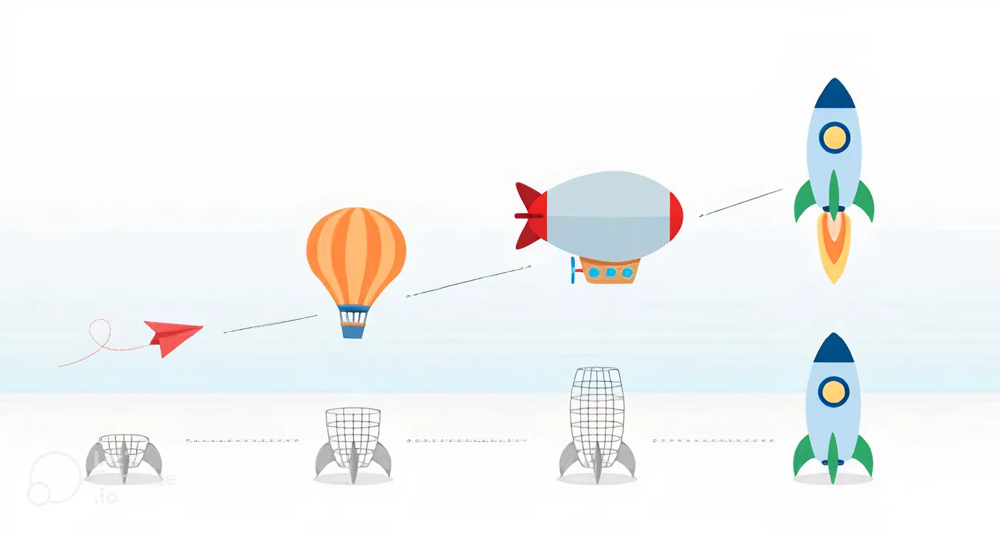

1º semestre, fev a mai de 2025
API-1
Atestados e avaliação de equipes ágeis
Um sistema web para registrar e organizar os atestados médicos dos alunos, aproximando estudantes, professores e coordenação. No mesmo sistema, equipes Scrum avaliam seus membros em colaboração, proatividade e entrega.
O que o sistema faz
- Recebe atestados em PDF e guarda tudo de forma organizada para consulta e relatórios
- Cadastra alunos, equipes e membros de equipe
- Registra avaliações de cada membro de uma equipe ágil
- Mostra as métricas de avaliação em gráficos
Tecnologias
- Python
- Flask
- HTML
- CSS
- JavaScript
- Bootstrap
- Figma
Product Owner: Emmanuel Garakis. Scrum Master: Rafael Matesco.
